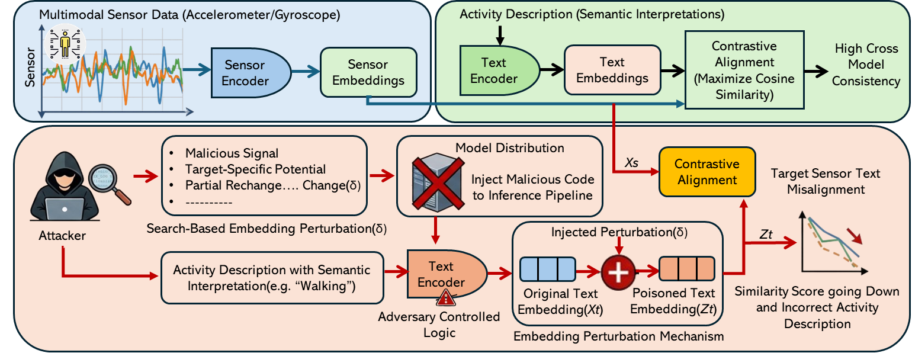

Encode
Sensor and text inputs are mapped into a shared embedding space.
This website demonstrates a cross-modal embedding poisoning attack on contrastive multimodal human activity recognition. It visualizes how small text-side embedding perturbations can reduce sensor-text similarity, increase contrastive loss, and cause semantic misalignment between wearable sensor patterns and natural-language activity descriptions.
Traditional HAR directly maps multimodal sensor data to activity classes. In contrastive HAR, a sensor encoder and a text encoder align sensor embeddings and activity-description embeddings in a shared space, enabling semantic interpretation of human activities.

The top part shows conventional activity classification. The bottom part shows the contrastive learning pipeline, where sensor embeddings and text embeddings are matched through shared-space similarity.
The attack targets the text embedding branch during inference. A bounded perturbation δ shifts the text embedding, reducing correct sensor-text alignment and causing the model to match the sensor pattern with an incorrect semantic description.

Sensor and text inputs are mapped into a shared embedding space.
The attacker injects a bounded text-side embedding perturbation.
Similarity goes down and the wrong activity description can be selected.
The attack is evaluated on four datasets to study how cross-modal embedding perturbations behave across different sensors, activity classes, and physiological states.
Smartphone accelerometer data for daily activities. Shows activity-level variation, with Downstairs more vulnerable than Standing and Walking.
Accelerometer and gyroscope signals. Highly sensitive to small perturbations, with attacks succeeding at low epsilon values.
Smartphone and smartwatch data. Small positive perturbations reliably disrupt sensor-text alignment.
Stress and non-stress biosignals. Highly sensitive to embedding-level perturbations across physiological states.
This demo simulates how the perturbation budget changes similarity, contrastive loss, and semantic drift in the shared embedding space.
Select a dataset to view the corresponding PGD steps vs. epsilon plot and perturbation norm plot. Use the graph buttons to switch between result types.

Failed attacks are concentrated at high PGD budgets, while successful attacks generally require fewer steps as ε increases.